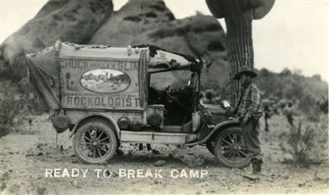

Vintage Papago Park Images from the Collection of
Jeremy Rowe Vintage Photography all images © 2007
Many amateur photographers made images of Papago Park after hand cameras became popular in the early 20th century.Here are a few examples of post card era images of Papago Park.

"Chuckawalla Slim, the Rockologist" (Edwin Vose)
taken in Papago Park
ca 1923
"Hole in the Rock" ca 1940 by Burton Frasher
"Hole in the Rock" ca 1940's
"Hole in the Rock" ca 1940's

Papago Park looking NW from Hunt's Tomb ca 1940
Papago Park looking NW from Hunt's Tomb
ca 1940 by Burton Frasher
Papago Park ca 1930